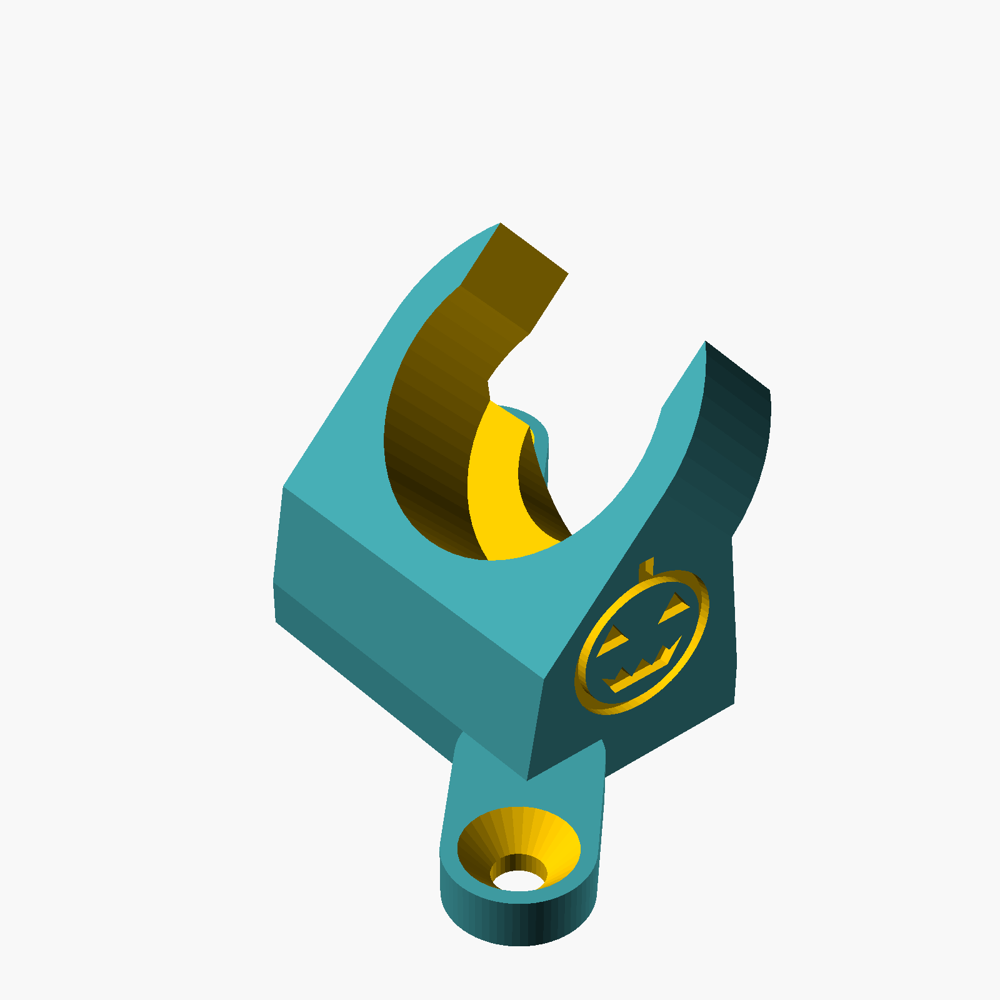
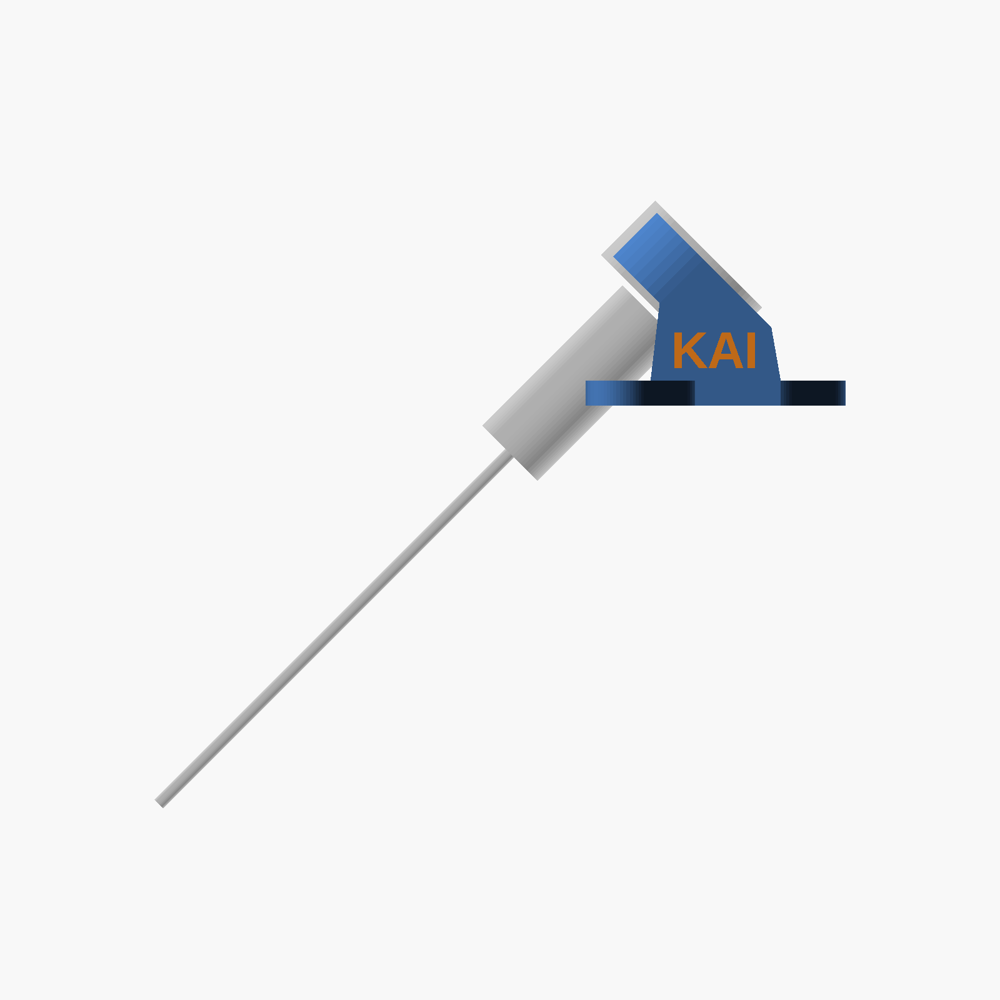

Two kids built a robot boat by talking to a computer. Today you'll see how — and how it could be your job one day.
rule #1 of engineering
Try. Fail. Learn.
SpaceX tried to land a rocket on a boat in the ocean. The first tries crashed. Each crash showed them a problem nobody knew was there, so they fixed it and tried again. In 2016, one landed.
Guess. Test. Learn. Try again.
SpaceX: How Not to Land an Orbital Rocket Booster (2 min)
our boat failed too
Three tries
❌ Try 1: fans in the air. Too slow!
❌ Try 2: props didn't reach the water
✅ Try 3: tilted props. It works!
For try 2, we took a photo, drew on it, and told the AI "this is what's wrong." It designed the fix.
so what is AI?
A super-guesser that read a giant pile of the internet.
"The boat goes really ? "
fastmost likely
slowmaybe
banananope
It's a great guesser. Guesses can be wrong. So we always test.
the one skill you need
How to talk to AI
1. WhatWhat do you want?
2. DetailsWho's it for? What do you have?
3. RulesHow big? How much money?
4. CheckHow will we know it works?
weakmake me a boat
strongHelp me build a toy boat (what) from soda bottles for my class (details). Under $50, no soldering (rules). How do we test it floats? (check)
job #1 · 3D designer
Type it. Print it. Hold it.
we typed (+ the photo)"Make two motor holders, tilted 45 degrees so the props go in the water. Put Kai on one and a teammate on the other."
AI made the picture and the 3D model
It saved an STL file: the file a 3D printer reads
The printer made the real part

AI's 3D design

tilted 45° into the water
job #2 · the parts expert
From idea to your front door
AI researched the parts — and checked what we already had
It put them in the Amazon cart
A grown-up looked it over and clicked buy
Two days later: box at the door
Then we said "check your own work" — and it caught its own mistake: the "propellers" were really windmill blades!
job #3 · architect + builder
LEGO-style instructions, made by AI
We described the boat's wires once
AI drew a step-by-step booklet, one step per page — like LEGO
Change one wire and every page redraws itself
Architects draw how to build a whole house the same way. That job is changing fast.
If you can explain it clearly, AI can draw it.
job #4 · electrical engineer
How the brain checks the battery
The motor battery is 9 volts. The brain can only take about 3. More than that and it's fried.
Two tiny resistors cut the voltage into slices, like a pizza
The brain only tastes one small slice (about 1.5 volts). Safe!
Then it does the math: slice × 5.7 = the whole battery
Now the driving app shows how full the battery is.
job #5 · game developer
Driving it is a video game
The boat makes its own Wi‑Fi. Your phone joins it.
The big pad steers. ALL STOP is the brake.
We told the AI: "make it look like Fortnite"
And we added LASERS!
Real lasers aren't wired in yet… so the button flashes the boat's red and green lights. Pew pew!
the real app
what will you build?
Every kind of engineer uses this
🚀 RocketsSpaceX, NASA
🎮 Gamesapps, worlds, characters
🏗 Buildingshouses, bridges, stadiums
🚗 Carselectric cars, batteries
🤖 Robotsfactories, Mars rovers
🩹 Medicinerobot arms, new body parts
AI does the busy work. You decide what's worth building.
builder rules
Stay safe
Build with a grown-up. Lots of AI apps are for 13+.
Never type your password, address or school into AI.
Batteries can get hot. A puffy battery goes in the bin.
If AI helped with schoolwork, say so.
your turn · with a partner
Write your own AI message
Pick one: a phone stand to 3D print · a robot pet · a video game about your school
your messageStart typing above...
thanks!
Go build something weird.
What · Details · Rules · Check
Mistakes are how engineers learn
You're the boss. AI is the helper.
Everything here is free to copy: github.com/joefaron/kai-code